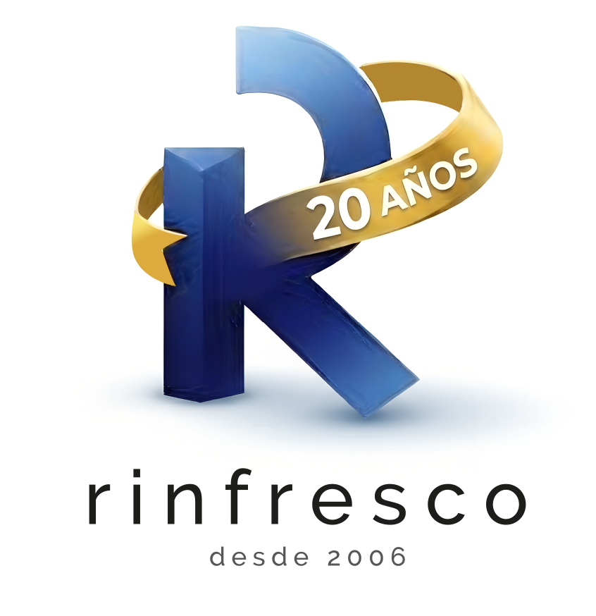

To our customers and suppliers: everyone who has chosen us, challenged us, supported us and helped us grow over the years. This story belongs to you too.
“A company is built on both sides of every transaction: with those who trust us to buy, and those who trust us to sell.”
For opening the door, coming back, recommending us, challenging us and helping us improve. A transaction may be one-off; a relationship lasting years is something else.
Thank you for giving us the opportunity to show what we could contribute.
Many of our improvements began precisely there.
The goal was never to sell once, but to keep working together.
Every customer who has grown with us is part of our evolution.
For trusting us with products, terms, opportunities and markets. Many of the solutions we have been able to offer started with strong relationships on the other side.
Thank you for believing in Rinfresco and in our work.
For being there when an operation required speed or flexibility.
The best transactions always end up having people behind them.
Many of our steps outside Spain began with suppliers who trusted us.
Today our activity is focused on four main product families: beverages, food, perfumery and household care. Different categories, managed with the same approach: agility, market knowledge, commercial reliability and long-term relationships.
“Thank you for buying, supplying, negotiating, challenging us, helping us find solutions and, above all, continuing to count on Rinfresco.”
After 20 years, we are still looking for the same thing: serious, transparent and lasting relationships with companies and people we can continue to grow with.
Discover our 20 years →